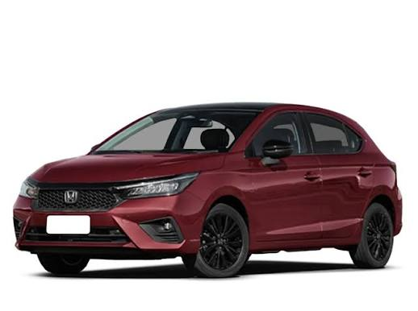
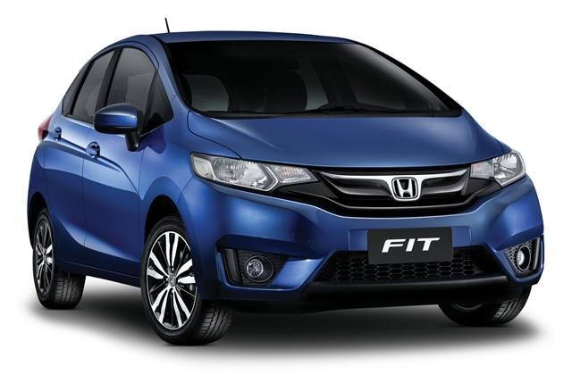

Lista de Automoveis

Honda Civic 2026 |
Motor e Desempenho: |
R$ 265.900 |
|
 Honda City 2026 |
Motor e DesempenhoMotor: 1.5L DOHC i-VTEC em alumínio com injeção direta |
R$ 117.500,00 |
|
 Honda Fit 2015 |
Motor e Desempenho: |
R$ 59.000 |